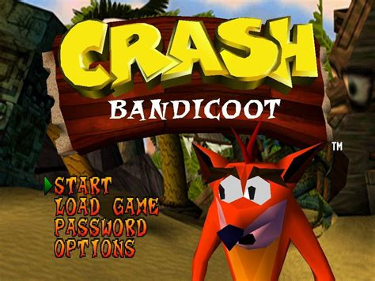
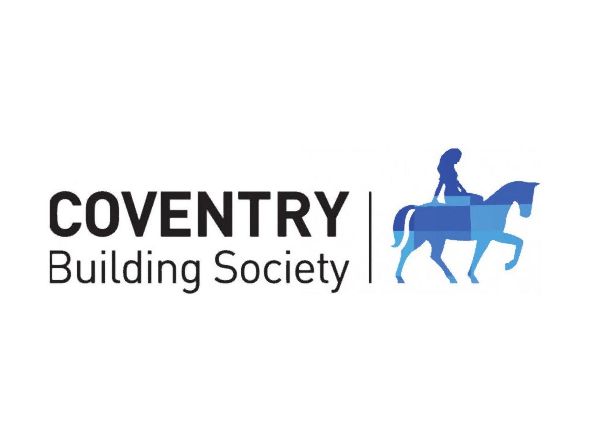

WHAT INTERESTS ME IN CODE CAMP
Becoming a software engineer has always been a dream of mine, and I believe that I have the qualities and skills needed to not just make that dream a reality, but to thrive in that role.

For as long as I can remember, computers and software have always fascinated me. Whether it’s video games, Android, or even Excel, I’ve always wanted to better understand the software that now encompasses so much of our lives and learn how to create my own applications for the benefit of myself and others. With cyber crime becoming more sophisticated, and privacy concerns more pertinent than ever, now feels like the perfect time to chase that dream.
I am committed to CBS’s future goals, and it's clear that software is going to be one of the main pillars that carry us into that future. I have seen firsthand how the recent online maturity changes significantly benefited both our members and staff. Being able to become part of the force that will shape our digital future would both be a career highlight, and an incredible opportunity for personal growth.

From a personal perspective, I have many ideas for apps that I want to develop, that I’d be more than happy to share if you’re interested! Additionally, I have an idea for a dream platform that would connect the people of today to the people of the future, supporting people that have yet to be born. I also use a lot of open-source software and would love to learn how to make the most of it. I believe Code Camp would give me an incredible foundation from which I could start bringing these ideas to fruition.
In conclusion, I believe Code Camp would be an incredible growth opportunity for me, enabling me to move into a career that would constantly challenge me creatively and force me to adapt. I want to use the skills I would learn to become part of CBS's push into its digital future. And finally, it would enable me to bring many long standing aspirations to reality.